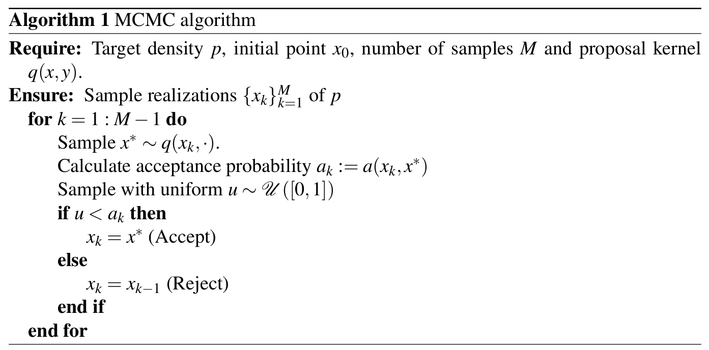

MCMC
What is a MCMC simulation?
Why to generate samples?
In probability theory, samples are fundamental in the analysis of a probability measure \(\mu\) with density \(p(x)\) in \(\mathbb{R}^{n}\). We will call an ensemble to a sequence of samples \(\lbrace X_k \rbrace_{k = 1}^{M}\) such that all of them are independent and identically distributed (i.i.d.) as \(X_k \sim p \).
The applications of ensembles are: Gaussian approximations of the target density \(p\) (central limit theorem), construction of statistical estimators, estimation of expectations via Monte Carlo, graphical representation of density approximations (via histograms), etc.
Generate samples is not an easy task. Once a sample of uniform distribution in 1D is generated, we can generate samples of other popuplar distributions as Gaussian, Exponential, Gamma, etc. This process is via the inverse function \(F^{-1}\) of the target cumulative distribution \(F\). Unfortunately, this technique is unfeasible in the majority of cases. Then, we need to look for more sophisticated methods. Some popular methods are: rejection sampling, methods based in transport maps, Markov Chain Monte Carlo methods (MCMC), etc. In particular we will introduce here the MCMC methods, which are based in the concept of Markov Chains.
Markov chains
In simple words a Markov chain consists in a countable stochastic process \( \lbrace X_{k} \rbrace_{k=1}^{\infty} \) with the property of no dependence of the past, for future predictions. This property is called Markov property or memoryless and in countable spaces it can be expressed mathematically as follows:
$$ \mathbb{P}\left(X_k=x_k \mid X_1=x_1, \cdots, X_{k-1}=x_{k-1}\right)=\mathbb{P}\left(X_k=x_k \mid X_{k-1}=x_{k-1}\right). $$
In \(\mathbb{R}^{n}\), the generalization of a Markov chain is via the formula
$$ \mathbb{P}(X_{k+1}\in B\mid x_0,x_1,\cdots,x_k) = \mathbb{P}(X_{k+1}\in B\mid x_k), $$
where \(B\) is a Borel set in \(\mathbb{R}^{n}\) (see e.g., [1]). Additionally, we can characterize the chain with a function \(q:\mathbb{R}^{n}\times \mathbb{R}^{n} \to [0,\infty] \), called Markov kernel. This function has the property of define a density function defines a density function with the restriction \(q(x,\cdot) \), i.e.,
$$ \int_{\mathbb{R}^{n}}q(x,y)dy = 1, $$
and the Markov chain can be calculated as follows:
$$ \mathbb{P}(X_{k+1}\in B\mid x_k) = \int_{B}q(x_k,y)dy. $$
Other essential concept in Markov Chains is given by the invariant distribution. It consists in a density \(\pi\), which satisfies the condition:
$$ \int_{\mathbb{R}^{n}}q(x,y)\pi(x)dx = \pi(y). $$
Metropolis-Hastings algorithm
The idea of MCMC methods consist in construct a Markov Chain such that for a large enough step \(k\), the chanin converges to our objective distribution \(p\). This idea is equivalent to force our target distribution \(p\) to be the invariant distribution of the chain. Then, we propose a Markov kernel \(q\) and a quantity called acceptance probability, which is defined as follows:
$$ a(x,y) = \min\left(\dfrac{p(x)q(y,x)}{p(y)q(x,y)},1\right). $$
Then, we construct a new Markov kernel called Metropolis-Hastings kernel and defined by:
$$ p_{MH}(x,y) := a(x,y)q(x,y), $$
and with the property of \(p\) as invariant distribution of \(p_{MH}\). The algorithm for compute a Markov chain with this kernel is given as follows:

Random-Walks
One of the most simple proposal kernels is given by the Gaussian distribution \(q(x,y) = \mathcal{N}(x-y,\Gamma)\). Which by construction is a symmetric function and reduces the probability acceptance to the minimum between the ratio of the target densities and 1. This fact reduces the mathematical complexity of the model. Even more, the sample updated step \(x^{*}\) is reduced to a simple Gaussian sample. This way to sample can be interpreted physically as the movement of a particle diffusing in a liquid, or as a discret process that explains the heat in the limit process (see e.g., [4]).
Bibliography
[1] Cohn, D. L. (2013). Measure theory (Vol. 2). New York: Birkhäuser.
[2] Durrett, R. (2019). Probability: theory and examples (Vol. 49). Cambridge university press.
[3] Robert, C. P., Casella, G., & Casella, G. (1999). Monte Carlo statistical methods (Vol. 2). New York: Springer.
[4] Salsa, S. (2015). Partial differential equations in action (Vol. 1). Milan: Springer.
[5] Sanz-Alonso, D., Stuart, A., & Taeb, A. (2023). Inverse problems and data assimilation (Vol. 107). Cambridge University Press.